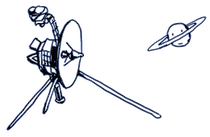
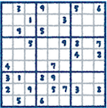

この章では、本書で学ぶことの概要と、前提とする知識について説明します。
1. 学ぶ内容
コンピューター科学は現代社会の基盤技術となり、人工知能、SNS、スマートフォン、自動運転など私たちの生活のあらゆる側面に影響を与えています。本書では、日常的に使っているデジタル技術の背後にある原理を探求し、コンピューターの仕組みや情報の本質について学びます。文系・理系を問わず、デジタル社会を生きる上で役立つ知識と視点を身につけることを目指します。
-
コンピューター内部でのデータの表現方法について理解する
-
文書、画像、動画等のデータ量の感覚を身につける
-
コンピューターでの複雑な処理が基本演算から構成されていることを理解する
-
コンピューターに関連した技術や理論の広がりについて理解する
| この授業は、道具としてのコンピューターの操作を学ぶことが目的ではありません |
普段使っている Microsoft Office や Windows、macOS 等の操作方法について学ぶ授業ではありません。
「コンピューター」を「自転車」に置き換えてみると、
-
自転車に乗れるように練習する
授業ではなく
-
自転車はどのような構造になっているのか
-
自転車はどのような仕組みで倒れずに進むのか
を、背後にある物理法則や工学的な原理を通して学ぶ授業であると考えてください。
「コンピューター科学」は「計算機科学」ともいいます。ここでいう「計算機（computer）」は電卓の「計算器（calculator）」ではなく、コンピューターのことを指します。つまり、ここでの計算（computation）とは狭義の計算（calculation）とは異なります。たとえば、人間の知的活動を計算（computation）としてとらえるのが人工知能の考え方です。
|
高校数学の数学I・A・II・Bの知識を前提として説明をすすめます（読み進めるうちに思い出せる程度で十分です）。 |
この授業の内容は、短期的にすぐに役に立つ内容ではないかも知れないという点は強調しておきます。
ただし、国家試験である情報処理技術者試験の「基本情報技術者試験」と「応用情報技術者試験」の受験を考えている読者にとっては、出題される一部の範囲の内容を含んでいるので、受験勉強に役立つかもしれません。受験参考書には書かれていない原理などについてより深く学ぶことができます。
なお、基本情報技術者試験は2023年4月からCBT方式による通年実施となり、出題も科目A・科目Bに再編されています。以下はWikipediaの 基本情報技術者試験 からの引用です（再編前の時点の記述を含みます）。
新卒のIT職の志望者の中での取得率は10%に満たない。大手民間企業や公的機関のIT関連職では基本情報技術者試験 (FE) 以上の合格者しか採用しないケースもある。 公的機関では特に、情報技術の関連職の採用を、基本情報技術者試験 (FE) の合格を基準に行っているところがあり、大学卒業程度に相当する資格と位置づけられるのが一般的である。
1.1. 今後の授業で扱うトピック
この授業では、広いコンピューター科学のトピックから以下の内容を選び、基本的な考え方を学びます。
1.1.1. コンピューター発展史とデータ量の単位
電子式コンピューターの歴史は1940年代の真空管を使った初期のコンピューターから始まり、トランジスタ、集積回路、そしてマイクロプロセッサへと発展してきました。この発展の過程で、コンピューターの性能は飛躍的に向上し、サイズは小型化してきました。
スマートフォンで大量の動画などをみるときに
「ギガが減る」
という言い方をします。このギガとはなんなのでしょう？ また、コンピューターを買うときに、メモリが8ギガバイトだとか、ハードディスクの容量が1テラバイトだとかいう言い方をします。このギガ、テラ、バイトが何を指すのか、正確に知っているでしょうか。
通信速度の理解
インターネット接続をするときに「ベストエフォート1Gbps」といった表現をみたことはないでしょうか。この授業では「ベストエフォート」といった表現や「bps」等の通信速度に関する知識も合わせて学びます。
実践的データ量の感覚
さらに、データ量の土地勘をつけることを目標とします。スマートフォンで読んでいるライトノベルや、撮った写真が、どのていどのメモリを消費しているのか、実際に確認をしてみて、データ量に対する土地勘を養います。
1.1.2. USB: 端子の規格と通信の規格
たくさんのUSBケーブルが溢れていて、どのケーブルを使ったらいいか迷ったことはないでしょうか。近年は USB-C ケーブルが主流になりつつありますが、実は同じ見た目の USB-C ケーブルも、ケーブルによっては通信ができなかったり、十分な通信速度がでなかったりします。
例えば以下のような経験はありませんか？
-
スマートフォンを充電できるUSB-Cケーブルが、ノートPCとモニターの接続に使えない
-
外付けSSDを接続したが、想定よりも遅い転送速度になる
-
PD（Power Delivery）対応と書かれたケーブルと非対応のケーブルの違いがわからない
授業では、このような日常的な疑問の背景にある技術規格について理解を深めます。
1.1.3. コンピューター内部での数の表現
2進法や16進法などの基数の考え方をもとに、コンピューター内部でどのように数値が表現されるかを学びます。
整数は「2の補数表現」という方法で表されており、これによりコンピューターは負の数を扱うことができます。また、小数は「浮動小数点表現」で扱われますが、これは絶対的な精度ではなく相対的な精度で数を表現するため、計算によっては誤差が生じることがあります。
これらの表現方法には限界があり、表現できる数の範囲を超えると「桁あふれ（オーバーフロー）」が発生します。また、浮動小数点表現では表現できない数が多数あり、これが「表現誤差」の原因となります。こうした問題は、銀行のシステムや科学計算など、正確な数値計算が必要な場面で重要な課題となります。
1.1.4. コンピューター内部での文字の表現
今、みなさんが読んでいるこの文書の文字はコンピューター内部では、数値で表現されています。Webページやメールを読むとき文字が意味のない文字や記号の羅列になってしまういわゆる「文字化け」という現象に悩まされたことはないでしょうか。これは、コンピューター内部で文字を扱う方法が一通りではないことに起因しています。
コンピューター内部での文字の表現方法はコンピューター開発のさまざまな歴史を抱え込んで発展してきたため、必ずしも一貫した規則があるわけではなく、あまり美しい部分ではありません。しかし、データを扱う際には必要な知識となります。
1.1.5. 情報理論
情報理論は、1948年にクロード・シャノンによって創始された、情報の数学的な性質を研究する学問です。ビット単位での情報量の定量化、情報の圧縮、ノイズのある通信路での情報伝送などを数学的に扱います。この理論は現代のデジタル技術の基礎となっています。
情報理論と現代技術の関係
情報理論は現代技術の多くの分野に深い影響を与えています。例えば
-
深層学習（ディープラーニング）: 機械学習モデルのトレーニングでは、クロスエントロピーと呼ばれる情報理論に基づく損失関数が広く使われています
-
データ圧縮: 画像圧縮（JPEG）、音声圧縮（MP3）、動画圧縮（H.264/H.265）はすべて情報理論の原理に基づいています
-
通信システム: 5G通信やWi-Fi、Bluetoothなどのワイヤレス通信技術は、シャノンの通信理論に基づいた符号化技術を使用しています
-
セキュリティ: 暗号化技術の多くは情報理論の原理を応用しています
これらはすべて私たちの日常生活で使用する技術の核心部分を構成しています。
データ圧縮
シャノンが情報理論で扱ったもう1つの重要な対象がデータ圧縮です。大きなファイルを Windows 等で zip 形式で「圧縮」したことがある人もいるのではないでしょうか。データをできるだけ小さなサイズに「圧縮」することは、通信のコストを下げる上でも重要です。シャノンは、データを圧縮する方法について研究し、その理論的限界を示しました。普段扱っている音声や画像ファイルは、そのほとんどが圧縮されています。
たとえば、パソコンやスマートフォンで使えるGoogle日本語入力の辞書は、理論的な限界に近いサイズまで圧縮して保存されています。辞書の場合、検索をしなくてはなりませんので、圧縮したままでは不便と思われるかもしれません。実は、圧縮の仕方によっては、圧縮したままの方が検索が圧倒的に早くなります。授業では、データ圧縮の考え方についても学びます。
データ圧縮や誤り訂正符号を支える重要な考え方が情報量です。シャノンは、事象の起こりにくさを確率の対数ではかることで情報量を定量化し、確率分布のもつ不確実性を表す測度として情報エントロピーを定義しました（もともと熱力学で導入された概念と数学的に同型です）。定義と使い方は、情報理論の章でくわしく扱います。
誤り訂正符号
1977年に打ち上げられた宇宙探査機ボイジャー1号は、地球から約255億km(光で約23時間半、2026年時点)の距離にあります。 
ボイジャー1号は、今も定期的に地球と通信を行っています。地球からボイジャーへは16bpsの速度で命令が送信され、ボイジャーからは今も約160bpsの通信速度で観測データを地球に送信しています。ボイジャーからの電波を地球で受信するまでに、ノイズによりデータが破壊されてしまうことがあります。デジタルデータではわずかなデータの破損も致命的になり得ます。
ノイズ対策としてボイジャー1号の通信には、畳み込み符号やリードソロモン符号といった誤り訂正符号技術が用いられています。一部のデータが破損しても、受信時に復元できる仕組みです。この技術はCDやインターネット通信、二次元バーコードのQRコードにも用いられています。汚れでQRコードがある程度欠損していても、正しくデータを読み取ることができるように設計されています。
この誤り訂正符号技術のもとになる理論は、先ほど触れたシャノンの情報理論の成果です。シャノンが論文「通信の数学的理論」(1948)でこの理論を発表したことからもわかるように、情報理論は「効率的な通信を行うための数学理論」です。この授業では、残念ながらその細部に触れる時間はありませんが、シャノンの誤り訂正符号の考え方が、なぜ革新的であったのかを学びます。
1.1.6. 論理演算とブール代数
今日のコンピューターは、スイッチのオンとオフに相当する0と1の信号を処理する部品で構成されています。この授業では、どのようにして単純な0と1の演算からコンピューターが成り立っているのかを垣間見ることを目標とします。その基礎となるのが、0と1の2つの値だけを扱うブール代数です。 ブール代数では論理和(OR)演算を「+」で表すことがあり、この場合1+1=1となります。これは通常の算術演算とは異なる演算体系です。まずは、普段慣れ親しんだ四則演算から離れて、コンピューターの基礎である論理演算の理論となるブール代数について学びます。
1.1.7. コンピューターの構成要素
コンピューターはスイッチのオンとオフの組合せによって定義される論理演算によって、どのように計算をしているのか、簡単な論理回路の構成を通して学びます。また、論理回路を用いてコンピューター内でデータを記憶しておく仕組みを、SRAMと呼ばれるメモリの基本となるフリップフロップ回路を通して学びます。
1.1.8. オペレーティングシステムとプログラムの実行
オペレーティングシステム(OS)は、WindowsやmacOSなどのコンピューターの基本ソフトウェアであり、ハードウェア資源の管理やユーザーとのインターフェースを提供する重要な役割を担っています。この授業では、OSがどのようにハードウェアを抽象化して、プログラムの実行環境を提供しているかの基本的な考え方を学びます。
また、プログラミング言語で書かれたプログラムがどのようにしてコンピューターが実行できる形式に変換されるのか、コンパイラやインタプリタの基本的な働きについても触れます。私たちが日常的に使用しているアプリケーションソフトウェアが、コンピューターの中でどのように動作しているのかを理解することで、コンピューターを使う際の理解が深まります。
1.1.9. アルゴリズムと計算量
アルゴリズムとは、問題を解くための手順や方法を指します。日常生活でも料理のレシピや組み立て説明書などの形でアルゴリズムを利用しています。コンピューター科学では、問題を解くための効率的なアルゴリズムの設計が重要な研究テーマとなっています。
アルゴリズムの効率は、実行に必要な時間（時間計算量）と使用するメモリ量（空間計算量）で評価します。特に問題のサイズが大きくなったときの計算量の増加率が重要であり、これをビッグO記法（O(n)、O(n2)など）で表現します。
授業では、基本的なアルゴリズムとその計算量について学びます。
1.1.10. 計算量理論
計算量理論はアルゴリズム理論をさらに抽象化し、問題そのものの本質的な難しさを研究する分野です。どんなアルゴリズムを使っても効率的に解けない問題が存在することや、効率的に解けるかどうかがまだ証明されていない問題が存在することを学びます。
コンピューター科学では、
「2地点間の最短経路を求めよ」
や
「全国に \(k\) 箇所ある営業所を重複せずに一巡する最短経路を求めよ」
といった問題が与えられたとき、その問題の「難しさ」について考える「計算量理論」という分野があります。計算の「難しさ」を語るには、まず、どのようなコンピューターで計算するのかを決めなくてはなりません。これを計算モデルといいます。この授業では詳細な形式化は避けますが、具体的には決定性チューリングマシンに相当する計算モデルを想定します。これは一般的なコンピューターでの計算を抽象化したモデルです。
計算量理論でいう計算の「難しさ」は、問題の入力サイズが大きくなるに従って計算時間や途中の計算で必要となる記憶領域がどの程度必要になるかを基準にして定義されます。先ほどの巡回経路の問題では、巡らなくてはならない営業所の数 \(k\) を入力サイズとしたとき、営業所の数 \(k\) が大きくなると、厳密な解を求めるための計算量は爆発的に大きくなり、スーパーコンピューターを使っても、とても手に負えない問題になることが経験的にわかっています。
2つの有名な問題を見比べてみましょう。数独とルービックキューブです。

数独であればマス目の数は 24, 34, 44,…の順に大きくなります。このマス目を決定する \(n=2, 3, 4, \ldots\) を数独の問題の入力サイズとします。一方でルービックキューブのキューブの数は 23, 33, 43, … の順に大きくなります。この \(n=2, 3, 4, \ldots\) をルービックキューブの問題の入力サイズとします。
数独は問題の入力サイズが大きくなるに従って解くのに要する時間は、入力サイズに対して飛躍的に大きくなるため、大きなサイズの数独を厳密に高速に解くことができるアルゴリズムは知られていません。一方で、ルービックキューブは入力サイズが大きくなっても、数独ほどは入力サイズに対して大きな影響をうけずにすべての面の色を揃える手順を見つけるアルゴリズムが知られています。
|
ルービックキューブは数独と比べて簡単に解けると述べました。ここで「解ける」とは、面の色を揃えるたくさんの手順のうち1つが見つかるという意味です。見つかった手順が最短であるとは限りません。 実はルービックキューブを解くための最短の手順を求める問題は、とても難しいことが知られています。3×3×3の通常のルービックキューブはどんな出発点からでも、高々20回の手順(回転)を経ればすべての面を揃えられることが2010年にようやく証明されました(回転の数え方を、180度回転も1手と数えるハーフターンメトリックとした場合)(このような最短の手順数は God’s Number と呼ばれています)。 さらに、一般のサイズ \(n\)(キューブ数 \(n^3\)個)のルービックキューブを解く最短の手順を見つける問題はNP完全と呼ばれるとても難しいと考えられている問題(NPやPについては後の章で説明します)に属することが2018年にMITのコンピューター科学者 Erik Demaine らによって証明されました。 |
ところで、数独もルービックキューブも正解を与えられれば検算はとても簡単です。数独であれば、縦横と各区画に相異なる数字が過不足なく入っていることを確認するだけですし、ルービックキューブであれば、各面が同じ色であることを確認するだけです。
以上の内容をふまえて、コンピューター科学で最も有名な未解決問題の話をすることにします。それは、とてもいいかげんな表現を恐れずにいうと、以下のような問題です。
検算が簡単な問題は、解くのも簡単か？
この問題は「P≠NP予想」として知られており、1971年にスティーブン・クックにより定式化されて以来、だれも証明に成功していません。米国のクレイ数学研究所はこの問題を懸賞問題の１つとして、100万ドルの懸賞金をかけています。
授業では、ここでの怪しい説明よりはほんの少しマシな説明を通して、計算量理論の初等的な話題をいくつか取り扱い、コンピューター科学で扱う「計算」の概念について理解を深めます。
計算量理論の応用：現代暗号
現代の公開鍵暗号システムの多くは、特定の数学的問題の計算困難性（たとえば、大きな合成数の素因数分解や、離散対数問題など）に基づいて設計されています。これらの問題は、現在知られている最良のアルゴリズムでも、問題サイズが大きくなると現実的な時間での解決が困難であると考えられています。
現在実用的に用いられている暗号のほとんどは、理論上は時間をかければ解読できるけれども、それは何万年、何億年もかかるかもしれず現実的な時間では解読できないことに依拠して暗号の安全性を実現しています。計算の難しさに基づく暗号は、解けないのではなく、解くのにとてつもなく時間がかかることで安全性を担保しているのです。
難しい問題における問題のサイズと計算量について、とてもよくわかる動画があります。YouTubeで8分ほどの動画です。視聴しておいてください。
-
『フカシギの数え方』 おねえさんといっしょ！ みんなで数えてみよう！, MiraikanChannel, YouTube, 2012.
2. 確認問題
ここから先を読み進める上で必須の知識です。忘れている人は、ここで復習しておいてください。基本的な数の変換は、コンピューター内部のデータ表現を理解する上で欠かせない基礎となります。
2.1. まずは復習
高校の「数学A」や「情報I」で習う数の2進法から10進法、10進法から2進法への変換の復習です。
現在のデジタルコンピューターはスイッチのオン・オフ、電圧の高・低といった2つの異なった状態に基づいて設計されています。そのため、コンピューター内部のデータはすべて、0と1のみを用いた数の表記法である2進法で表されます。2進法の1桁分のデータ量を1ビット、8ビット分を1バイトとよびます。これらデータ量の単位については次回「コンピューター発展史とデータの単位」でくわしく扱いますので、ここではその前提となるn進法の復習をしておきます。
我々が普段つかっている10個の記号0から9を用いた数の表現を10進法といいます。用いる記号の数により、以下のような様々なn進法の数表現が考えられます。n進法のnを基数(radix or base)といいます。
| 10進 | 2進 | 3進 | 4進 | 8進 | 16進 |
|---|---|---|---|---|---|
0 |
0 |
0 |
0 |
0 |
0 |
1 |
1 |
1 |
1 |
1 |
1 |
2 |
10 |
2 |
2 |
2 |
2 |
3 |
11 |
10 |
3 |
3 |
3 |
4 |
100 |
11 |
10 |
4 |
4 |
5 |
101 |
12 |
11 |
5 |
5 |
6 |
110 |
20 |
12 |
6 |
6 |
7 |
111 |
21 |
13 |
7 |
7 |
8 |
1000 |
22 |
20 |
10 |
8 |
9 |
1001 |
100 |
21 |
11 |
9 |
10 |
1010 |
101 |
22 |
12 |
A |
11 |
1011 |
102 |
23 |
13 |
B |
12 |
1100 |
110 |
30 |
14 |
C |
13 |
1101 |
111 |
31 |
15 |
D |
14 |
1110 |
112 |
32 |
16 |
E |
15 |
1111 |
120 |
33 |
17 |
F |
16 |
10000 |
121 |
100 |
20 |
10 |
16進法では、一桁の数を表すのに16種類の記号が必要となります。普段つかっている0から9の十種類の記号では、数がたりなくなるため0,…,9,A,B,C,D,E,Fの16種類の記号を用いて数を表現します。
2進法の1010と10進法の1010は、表現は同じでも異なる数を表しています。そのため、基数を数表現の右下に括弧で表して、n進法による数表現を区別します。ただし、n=10のときは基数の表記を省略します。
-
2進法の1010は、10進法の10と等しい。1010(2)=10
-
1010(2) = 1×23 + 0×22 + 1×21 + 0×20 = 8 + 0 + 2 + 0 = 10
-
一般にn桁のr進法の整数表現の各桁を \(a_{n-1}a_{n-2}\cdots a_0\) とおくと
-
-
小数でも同様。0.011(2) = 0.375
-
0.011(2) = 0×2-1 + 1×2-2 + 1×2-3 = 0 + 0.25 + 0.125 = 0.375
-
一般に小数点以下m桁のr進法の小数表現の各桁を \(a_{-1}a_{-2}\cdots a_{-m}\) とおくと
-
2.1.1. 2進法と16進法間の数表現の変換
24=16 であることから、2進法の4桁(4ビット)は、16進法の1桁にちょうど対応していますので、2進法の整数を16進法に変換するのは簡単です。2進法の数を下位桁から4桁ごとに区切って、4桁単位で16進法の表現に置き換えるだけです。